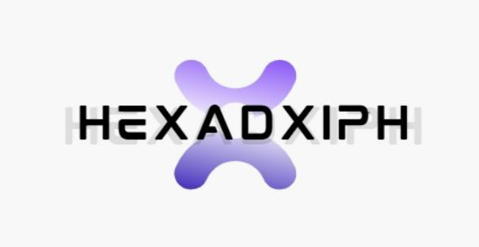

Concept & product specification


Team Hexad Xiph presents An intelligence layer for India’s scholarship system
Xiph is a continuously updated, evidence-aware ecosystem that discovers scholarship opportunities, verifies their requirements against official sources, and walks each student from “what exists?” to “applied, tracked, renewed.”
§The problem worth solving
Scholarships for Scheduled Tribe students are a lifeline — and finding them is a maze. Opportunities are scattered across ministry portals, university notices and word of mouth; eligibility rules live inside PDFs; a changed deadline is discovered only when it is too late.

Meanwhile the machinery that delivers funds is under real strain. The Union Budget 2025-26 cut the National Fellowship for Scheduled Tribes allocation by 99.99% in a single year — from ₹240 crore to ₹0.02 crore — before a partial recovery in 2026-27.

Typical scholarship portal
Manually maintained listings
Static eligibility filters
Search by keywords
PDF storage
Generic chatbot
Deadline reminder
What Xiph proposes
Continuously discovered, self-healing data acquisition
Rules + evidence-aware RAG + document-aware personalization
Profile + document + deadline + historical context matching
Document intelligence: OCR, validation, compression, reuse
Source-aware, temporal, contradiction-aware RAG
Preparation-time-aware application planner
§Six pillars of the product
Every feature in the 38-section specification hangs off one of six capabilities.
Discovery
Continuously find opportunities and updates.
- Self-healing crawler
- Source registry
- Change detection & deduplication
Intelligence
Understand and verify scholarship information.
- Evidence-aware RAG
- Rules-based eligibility engine
- Historical selection data
Documents
Turn collection into an intelligent workflow.
- Vault with OCR & validation
- Compression & conversion
- Expiry detection & reuse
Personalization
Match opportunities to the student’s real profile.
- Scholarship Radar
- Document unlock analysis
- Readiness & deadline risk
Application Copilot
Help students prepare high-quality applications.
- SOP & proposal drafting
- Requirement validation
- Verified-profile guardrails
Management
Support the full lifecycle for every stakeholder.
- Verification workflow
- Institution & ministry dashboards
- Alerts, disbursement & renewal
§Rules decide, LLMs explain
The crawler collects evidence; structured rules handle deterministic eligibility; RAG retrieves the right evidence; AI explains and assists; the backend coordinates the lifecycle. An LLM may extract candidate rules, but a deterministic engine evaluates them — and missing data never upgrades into a “yes”.

Xiph never predicts selection. It reports three descriptive measures — eligibility confidence, historical profile fit, and application readiness — each traced to evidence.
§One pipeline, many doors

The web app, Android companion and administrative portals all consume the same API-first backend — no duplicated business logic. Suggested stack: FastAPI, PostgreSQL, Qdrant, Redis workers, Next.js on the web and Kotlin + Jetpack Compose on Android.
§Inclusive access: reaching every student
A scholarship system fails if it only works on high-speed 5G in English. Xiph provides five synchronized access channels designed for remote areas, tribal dialects, and low-end devices.

WhatsApp & SMS Bot
Zero-install conversational interface.
- Deadlines & status alerts
- Basic eligibility checks via chat
- Low-bandwidth document photo intake
Voice / IVR Bot
Dial-in voice support in local dialects.
- Bodo, Santali, Assamese, Gondi, Hindi
- Speech-to-text queries for parents & elders
- Interactive status checks without internet
Offline Android App
Field-resilient mobile client.
- SQLite / Room encrypted offline cache
- Background sync when connection restores
- On-device camera OCR & compression
Assisted CSC Mode
Village-level operator facilitation.
- Gram Panchayat / CSC operator portal
- Assisted student onboarding
- Batch document verification & tracking
§Government ecosystem interoperability
Xiph is built as a force-multiplier for existing government infrastructure, integrating cleanly with sovereign digital public goods rather than replacing them.
| Ecosystem System | Integration Touchpoint | Value Added |
|---|---|---|
| DigiLocker | OAuth document fetch & issuer URI verification | Instant authentic caste, income, and marksheet verification |
| National Scholarship Portal (NSP) | 14-digit OTR ID linking & scheme schema sync | Unified application lifecycle without double data entry |
| PFMS & APB | Direct Benefit Transfer disbursement status tracking | End-to-end payment visibility to bank credit |
| APAAR / ABC | Academic Bank of Credits verification | Tamper-proof academic performance & enrolment records |
§Trust is the product
Every fact in Xiph carries a label — Official, Cross-verified, Community observation or Unverified — with the number and period of supporting discussions, and a visible last-verified date. Community insight never silently overrides an official source; conflicts are displayed side by side.

§Measurable impact & success criteria
We measure success by tangible reduction in student friction, administrative backlogs, and missed scheme opportunities across tribal communities.
| Key Metric | Traditional Process | With Xiph Ecosystem |
|---|---|---|
| Discovery Time | 14–30 days scattered search | Instant profile-matched radar (< 5 seconds) |
| Application Rejections | High (missing docs, wrong format) | < 1% (pre-submission validator & OCR checks) |
| Lead Time Uncertainty | Blind deadlines, rushed paperwork | Buffer-aware planner with days-to-acquire estimates |
| Language Barrier | Predominantly English PDFs | Voice, WhatsApp, & multilingual regional assistance |
| Eligibility Accuracy | Prone to misunderstanding | Deterministic rule engine with 100% cited evidence |
§Built for a demo that convinces

- One official PDF ingested with page-level evidence
- Eligibility engine with tri-state results
- Self-healing demo on a deliberately broken mock page
- Radar, document unlock and the application planner
- Cited RAG answers with the contradiction view
- Copilot with requirement validation
- Notifications and the Android view of the same data
- Ministry dashboard to close on system-level impact
§Frequently asked questions
- How does Xiph prevent AI hallucinations in scholarship rules?
Eligibility decisions are never computed by an LLM alone. Deterministic rules evaluate structured criteria, while RAG retrieves verbatim text from canonical government circulars with page numbers. LLMs are restricted to explanation and drafting.
- What happens when a government portal layout changes?
The self-healing crawler detects extraction anomalies, falls back to semantic parsing and visual inspection, verifies extracted fields against historical ranges, and repairs its extraction strategy automatically (§4).
- How is student privacy protected under India's DPDP Act?
Documents in the vault are encrypted at rest with AES-256 and transmitted over TLS 1.3. No raw Aadhaar numbers are stored; DigiLocker URI tokens are used instead. Student consent is explicit and revokable at any moment (§32).
- Can students apply if they lack internet access at home?
Yes. The Android app operates fully offline with SQLite caching, and students can also interact via IVR toll-free voice calls, SMS, or through assisted mode at their nearest Common Service Centre (§27).
§Team Hexad Xiph
Six students of Tezpur University — computer science, mechanical engineering and design.
Sanjit Bhattacharjee
Computer Science · CSB25078
Prashant Sinha
Mechanical · MEBM25001
Dibyojyoti Baro
Computer Science · CSBM25001
Subhapriya Dey
Mechanical · MEBM25003
Ayan Biswas
CSE · CSM25032
Himashree Sarmah
Design · DBD25025
